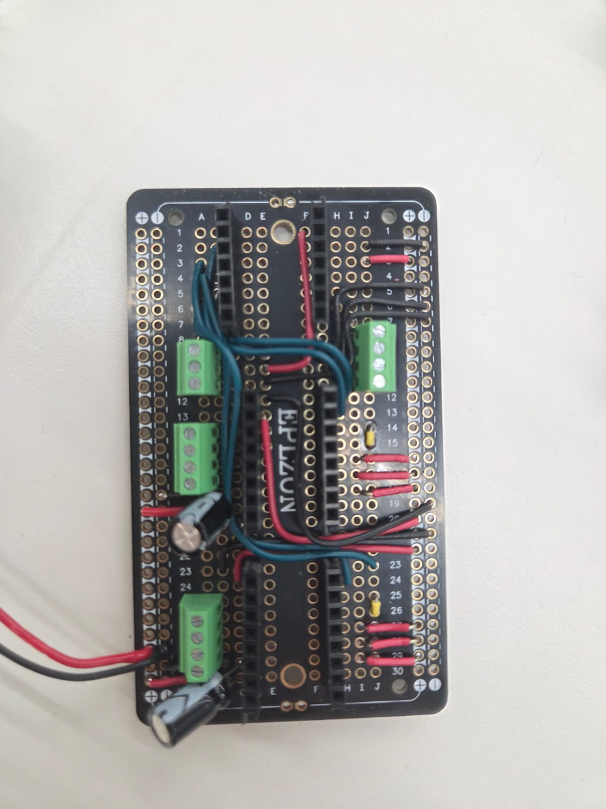
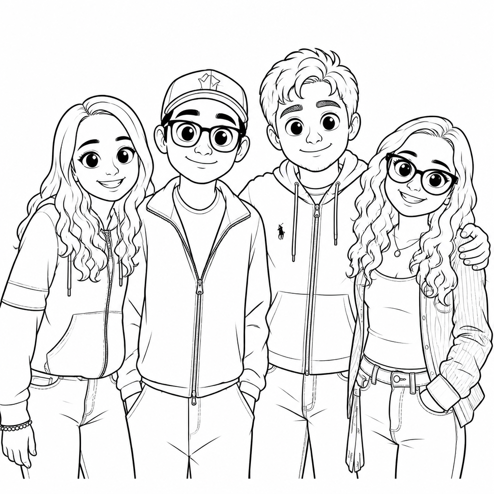
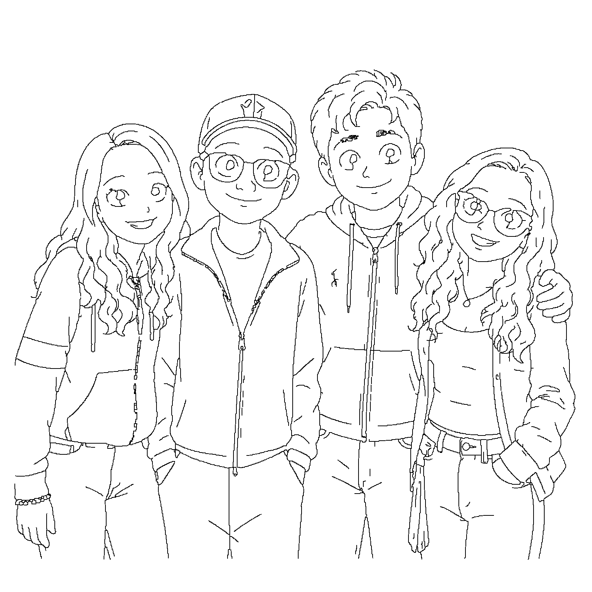
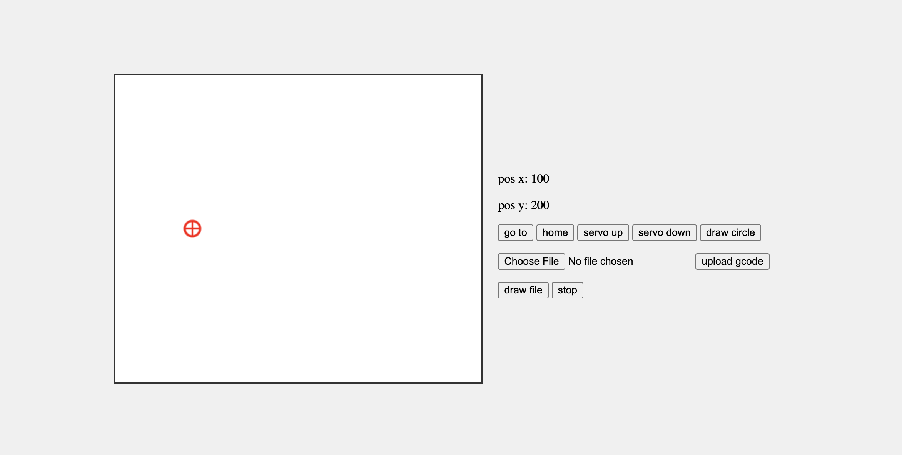

For this week's assignment, we created an AI caricature-drawing machine.
A few of the drawings that came off the machine.
This was the most challenging project of the class so far. Almost everything that could go wrong did, and most of the work was diagnosis rather than building.
Our power source was a European charger, and power and ground were reversed relative to what the board expected. The first symptom was the stepper drivers getting extremely hot to the touch. We confirmed it with a multimeter before changing anything, then rewired power and ground. The drivers ran cool after that and the machine moved.
We installed the eccentric nut the wrong way around, so it could not take up the slack between the wheel and the rail. The whole gantry was wobbly and the pen would lose contact in some areas of the page. Once we flipped it and adjusted the tension, the motion was noticeably smoother.
Homing worked well until the nuts holding the Y limit switch came loose. The switch shifted just enough that the carriage no longer made proper contact, so the Y axis never registered home. We actually solved this problem when we went from full stepping to microstepping (problem below) and the machine ran very smoothly.
We originally followed the schematic given in class, which ties the driver mode pins to ground. That puts the drivers in full step mode. The example code assumed microstepping was enabled, so xMicrosteps and every speed and acceleration value were wrong for our hardware.
The effect was confusing. Steps per millimeter were off by more than an order of magnitude, so the machine lurched across the whole bed. The speeds inherited from the example were also far too fast in full step mode, which caused missed steps and stalling. This took the longest to find because the symptoms looked mechanical, so we kept trying to adjust the hardware.
We fixed it in two stages. First we set xMicrosteps and yMicrosteps to 1 and scaled the speeds down to match, and the motion finally matched the commanded distances. Then we rewired the mode pins from ground to VCC so microstepping was enabled, put the speeds back, and we were able to start drawing!

Final soldered protoboard
The software is three small Python scripts on the laptop and a G-code interpreter on the board.
The first script sends the photo to the OpenAI image API with a prompt that asks for coloring-book line art. There are five styles to pick from.
--style | what it does |
|---|---|
coloring (default) | faithful line art, real proportions |
caricature | cute cartoon: bigger head, big eyes, small nose |
classic | classic caricature: exaggerates each person's own features |
pixar | animated-film look: large eyes, rounded face, oversized head |
chibi | chibi: huge head, tiny body, large sparkling eyes |
The prompt matters much more than I expected, and for a reason specific to a plotter. It has to be explicit that the output is a line drawing with simple contours only. If you leave that out, the model renders hair and beards as hundreds of tiny strokes and fills the eyes and mouth with solid black.
The second script converts the png from the previous step to computer vision. First it converts the image to grayscale and decides which pixels are ink using Otsu's method, which automatically picks the brightness cutoff that best separates the dark pixels from the light ones, so we don't have to hand-tune a threshold for every image. Next it thins those ink regions down to lines exactly one pixel wide using the Zhang-Suen thinning algorithm, which matters because a pen should trace the middle of a line once rather than travel around its outline twice. Then it treats the thinned image as a map and walks from pixel to neighbouring pixel to build up connected strokes, rejoining any pieces that got split at the points where lines cross. Finally it deletes the points that don't change the shape using the Ramer-Douglas-Peucker algorithm (a 2000-point stroke usually keeps only 40 to 80 points and looks the same), and reorders the strokes with a nearest-neighbour search so the pen doesn't jump back and forth across the page. What comes out is a list of lines in millimetres, which we write directly as G-code.
The last step scales the paths into millimetres and writes the file.
The pen itself is a servo, so pen up and pen down are emitted as M5 and M3 S255 with a G4 dwell after each one. Without that dwell the gantry starts moving while the pen is still on its way down and the beginning of every stroke is clipped.
; ---------------------------------------------
; Generated by photo-to-plot
; Drawing area: 100.0 x 100.0 mm
; Strokes: 97
; ---------------------------------------------
G21
G90
M5
G4 P250
G0 X0 Y0
G0 X25.918 Y72.939 F3000
M3 S255
G4 P250
G1 X24.248 Y69.424 F1200
G1 X23.896 Y69.336 F1200
M5
G4 P250For convenience, we created a script that calls the vectorize and gcode script and also renders a preview of the exact route the pen will take, which is not the same thing as the image that went in: it is the drawing after thresholding, thinning and simplification. Checking the preview first saved a lot of paper.


Left: the line art from step 1. Right: the actual pen route from the G-code
The board hosts its own access point, so there is no router involved and no serial cable. You join esp-captive, open 192.168.4.1, pick the .gcode file and hit upload. The file is written to LittleFS on the board rather than streamed, which means the drawing keeps going even if the laptop closes its lid or walks away. Then draw file starts the job and stop aborts it.

The firmware is based on the WebSocket code example given in class, with added functionality to move in millimetres, draw a circle, and interpret the G-code file.
Straight lines need both motors to finish together, so moveToMm() works out the step distance on each axis and scales the slower axis' speed and acceleration by the ratio between them. Without that the pen draws an L instead of a diagonal. The early-out when both distances are zero matters too: that case divides zero by zero and poisons the speed ratio.
The parser is deliberately tiny. getWord() looks for a letter like X and reads the number after it, and anything it does not understand is ignored. Coordinates are remembered between lines, since G-code leaves out an axis that does not change, and whatever position the head is in when the job starts becomes G0 X0 Y0, so the drawing can be placed anywhere on the bed. There is also a bounds check on every move: if a coordinate lands off the bed the job stops instead of grinding the gantry into the frame.
/*
Code updated by Bobby McCarthy 4/19/2026
Intended for Xiao Esp32c3
Using Libraries:
- Async TCP 3.4.10 https://github.com/ESP32Async/AsyncTCP
- ESP Async WebServer 3.10.3 https://github.com/ESP32Async/ESPAsyncWebServer
- AccelStepper 1.64 https://www.airspayce.com/mikem/arduino/AccelStepper/
- ESP32Servo 3.13 https://github.com/madhephaestus/ESP32Servo
How To Use:
- Connect to esp-captive under wifi networks on your laptop
- Then go to 192.168.4.1 in your browser
*/
#include <AsyncTCP.h>
#include <WiFi.h>
#include <ESPAsyncWebServer.h>
#include "html.h"
#include <AccelStepper.h>
#include <ESP32Servo.h>
#include <LittleFS.h>
const int xLimit = D8;
const int yLimit = D7;
const int stepPinX = D1;
const int dirPinX = D5;
const int stepPinY = D3;
const int dirPinY = D2;
float pulleyDiamX = 12.22;
float pulleyDiamY = 12.22;
const int xMicrosteps = 16;
const int yMicrosteps = 16;
const int stepsPerRev = 200;
const float xMmtoSteps = (xMicrosteps*stepsPerRev)/(pulleyDiamX*PI);
const float yMmtoSteps = (yMicrosteps*stepsPerRev)/(pulleyDiamY*PI);
const int servoPin = D4;
const int SERVO_DOWN = 0;
const int SERVO_UP = 140;
volatile bool isHoming = false;
AccelStepper stepperX(AccelStepper::DRIVER, stepPinX, dirPinX);
AccelStepper stepperY(AccelStepper::DRIVER, stepPinY, dirPinY);
static AsyncWebServer server(80);
// create an easy-to-use handler
static AsyncWebSocketMessageHandler wsHandler;
// add it to the websocket server
static AsyncWebSocket ws("/ws", wsHandler.eventHandler());
Servo servo;
volatile int currXPos = 0;
volatile int currYPos = 0;
volatile int servoPos = SERVO_UP;
volatile bool updateServo = true;
// ---- test circle ----
const float CIRCLE_CX = 50.0; // mm from home corner
const float CIRCLE_CY = 50.0;
const float CIRCLE_R = 20.0;
const int CIRCLE_SEGMENTS = 48;
const float DOT_R = 0.8; // the dot in the middle
const int DOT_SEGMENTS = 8;
const float DRAW_SPEED = 1200; // steps/s
const float DRAW_ACCEL = 4000; // steps/s^2
volatile bool drawCircle = false;
// ---- gcode file ----
const float BED_W_MM = 400.0; // <-- set to your real travel
const float BED_H_MM = 200.0;
volatile bool drawFile = false;
volatile bool stopFile = false;
float originXmm = 0; // where the job starts, captured when 'g' runs
float originYmm = 0;
// blocking move, both axes scaled so they arrive together
void moveToMm(float xmm, float ymm) {
long tx = lroundf(xmm * xMmtoSteps);
long ty = lroundf(ymm * yMmtoSteps);
long dx = labs(tx - stepperX.currentPosition());
long dy = labs(ty - stepperY.currentPosition());
if (dx == 0 && dy == 0) return; // avoids a 0/0 speed ratio
float vx = DRAW_SPEED, vy = DRAW_SPEED, ax = DRAW_ACCEL, ay = DRAW_ACCEL;
if (dx >= dy) { float k = (float)dy / (float)dx; vy = fmaxf(vy * k, 1.0f); ay = fmaxf(ay * k, 1.0f); }
else { float k = (float)dx / (float)dy; vx = fmaxf(vx * k, 1.0f); ax = fmaxf(ax * k, 1.0f); }
stepperX.setMaxSpeed(vx); stepperX.setAcceleration(ax); stepperX.moveTo(tx);
stepperY.setMaxSpeed(vy); stepperY.setAcceleration(ay); stepperY.moveTo(ty);
static uint32_t lastTick = 0;
while (stepperX.distanceToGo() || stepperY.distanceToGo()) {
stepperX.run(); stepperY.run();
if (millis() - lastTick >= 20) { lastTick = millis(); delay(1); }
}
}
void penTo(int target) {
static int actual = SERVO_UP; // setup() leaves it here
if (target == actual) return; // already there, nothing to do
int inc = (target > actual) ? 1 : -1;
for (int i = actual; i != target; i += inc) { servo.write(i); delay(5); }
servo.write(target);
actual = target;
servoPos = target;
delay(150);
}
void ring(float cx, float cy, float r, int segs) {
penTo(SERVO_UP);
moveToMm(cx + r, cy);
penTo(SERVO_DOWN);
for (int i = 1; i <= segs; i++) {
float a = 2.0f * PI * i / segs;
moveToMm(cx + r * cosf(a), cy + r * sinf(a));
}
penTo(SERVO_UP);
}
// finds a word like "X29.4" and returns its value, or def if the letter is absent
float getWord(const char *s, char letter, float def) {
for (const char *p = s; *p; p++) {
if (toupper(*p) == letter) {
char *e;
float v = strtof(p + 1, &e);
if (e != p + 1) return v;
}
}
return def;
}
void runFile() {
File f = LittleFS.open("/job.gcode", FILE_READ);
if (!f) { Serial.println("no job file"); return; }
// wherever the head is sitting right now becomes gcode X0 Y0
originXmm = stepperX.currentPosition() / xMmtoSteps;
originYmm = stepperY.currentPosition() / yMmtoSteps;
Serial.printf("origin %.1f, %.1f\n", originXmm, originYmm);
float x = 0, y = 0;
char line[128];
while (f.available() && !stopFile) {
int n = f.readBytesUntil('\n', line, sizeof(line) - 1);
line[n] = 0;
char *c = strchr(line, ';');
if (c) *c = 0; // drop the comment
float m = getWord(line, 'M', -1);
if (m == 3) { penTo(SERVO_DOWN); continue; }
if (m == 5) { penTo(SERVO_UP); continue; }
float g = getWord(line, 'G', -1);
if (g == 4) { delay((int)getWord(line, 'P', 0)); continue; }
if (g == 0 || g == 1) {
x = getWord(line, 'X', x); // no X on the line = keep the old one
y = getWord(line, 'Y', y);
float px = x + originXmm; // x and y stay raw, only px/py get the offset
float py = y + originYmm;
if (px < 0 || py < 0 || px > BED_W_MM || py > BED_H_MM) {
Serial.println("off the bed, stopping");
break;
}
moveToMm(px, py);
}
}
f.close();
penTo(SERVO_UP);
stopFile = false;
Serial.println("file done");
}
void setup() {
Serial.begin(115200);
WiFi.mode(WIFI_AP);
WiFi.softAP("esp-captive claudia's team");
pinMode(xLimit, INPUT_PULLUP);
pinMode(yLimit, INPUT_PULLUP);
pinMode(stepPinX, OUTPUT);
pinMode(dirPinX, OUTPUT);
pinMode(stepPinY, OUTPUT);
pinMode(dirPinY, OUTPUT);
digitalWrite(stepPinX, LOW);
digitalWrite(stepPinY, LOW);
digitalWrite(dirPinY, LOW);
digitalWrite(dirPinX, LOW);
stepperX.setAcceleration(1000);
stepperX.setMaxSpeed(2000);
stepperX.setPinsInverted(true, false, false);
stepperY.setAcceleration(1000);
stepperY.setMaxSpeed(2000);
servo.setPeriodHertz(50); // standard 50 hz servo
servo.attach(servoPin, 1000, 2000);
// stepperX.moveTo(3200);
// stepperY.moveTo(100);
if (!LittleFS.begin(true)) Serial.println("LittleFS mount failed");
// serves root html page
server.on("/", HTTP_GET, [](AsyncWebServerRequest *request) {
request->send(200, "text/html", (const uint8_t *)htmlContent, sizeof(htmlContent)/ sizeof(htmlContent[0]));
});
// receives the .gcode file and stores it in flash
server.on("/upload", HTTP_POST,
[](AsyncWebServerRequest *request) { request->send(200, "text/plain", "stored"); },
[](AsyncWebServerRequest *request, const String &name, size_t index,
uint8_t *data, size_t len, bool final) {
static File up;
if (!index) {
if (drawFile) { request->send(409, "text/plain", "busy"); return; }
up = LittleFS.open("/job.gcode", FILE_WRITE); // replaces any old file
}
if (up) up.write(data, len);
if (final && up) { up.close(); Serial.printf("upload %u bytes\n", index + len); }
});
wsHandler.onConnect([](AsyncWebSocket *server, AsyncWebSocketClient *client) {
Serial.printf("Client %" PRIu32 " connected\n", client->id());
server->textAll("New client: " + String(client->id()));
});
wsHandler.onDisconnect([](AsyncWebSocket *server, uint32_t clientId) {
Serial.printf("Client %" PRIu32 " disconnected\n", clientId);
server->textAll("Client " + String(clientId) + " disconnected");
});
wsHandler.onError([](AsyncWebSocket *server, AsyncWebSocketClient *client, uint16_t errorCode, const char *reason, size_t len) {
Serial.printf("Client %" PRIu32 " error: %" PRIu16 ": %s\n", client->id(), errorCode, reason);
});
//data comes in the format of xPos,yPos
wsHandler.onMessage([](AsyncWebSocket *server, AsyncWebSocketClient *client, const uint8_t *data, size_t len) {
Serial.printf("Client %" PRIu32 " data: %s\n", client->id(), (const char *)data);
bool isFirstNum = true;
int targetXPos = 0;
int targetYPos = 0;
if(len == 1){
switch((char)data[0]){
case('u'):
servoPos = SERVO_UP;
updateServo = true;
break;
case('d'):
servoPos = SERVO_DOWN;
updateServo = true;
break;
case('h'):
isHoming = true;
break;
case('c'):
drawCircle = true;
break;
case('g'):
drawFile = true;
break;
case('s'):
stopFile = true;
break;
default:
break;
}
return;
}
for(int i = 0; i < len; i++){
if (data[i] == ','){
isFirstNum = false;
continue;
}
if(isFirstNum){
targetXPos = targetXPos * 10 + (data[i] - '0');
}
else{
targetYPos = targetYPos * 10 + (data[i] - '0');
}
}
long targetXPosSteps = targetXPos * xMmtoSteps;
long targetYPosSteps = targetYPos * yMmtoSteps;
Serial.printf("targetXPosSteps %ld, targetYPosSteps: %ld\n", targetXPosSteps, targetYPosSteps);
unsigned long distanceX = abs(targetXPosSteps - stepperX.currentPosition());
unsigned long distanceY = abs(targetYPosSteps - stepperY.currentPosition());
float distRatio = distanceX/((float)distanceY);
stepperX.setAcceleration(distRatio > 1 ? 1000 : 1000*distRatio);
stepperX.setMaxSpeed(distRatio > 1 ? 1000: 1000*distRatio);
stepperX.moveTo(targetXPosSteps);
stepperY.setAcceleration(distRatio > 1 ? 1000/distRatio: 1000);
stepperY.setMaxSpeed(distRatio > 1 ? 1000/distRatio: 1000);
stepperY.moveTo(targetYPosSteps);
});
wsHandler.onFragment([](AsyncWebSocket *server, AsyncWebSocketClient *client, const AwsFrameInfo *frameInfo, const uint8_t *data, size_t len) {
Serial.printf("Client %" PRIu32 " fragment %" PRIu32 ": %s\n", client->id(), frameInfo->num, (const char *)data);
});
server.addHandler(&ws);
server.begin();
}
void loop() {
if(isHoming){
stepperX.setSpeed(-600);
stepperY.setSpeed(-600);
while((digitalRead(xLimit) == 1 || digitalRead(yLimit) == 1)){
if(digitalRead(xLimit) == 1){
stepperX.runSpeed();
}
if(digitalRead(yLimit) == 1){
stepperY.runSpeed();
}
}
stepperX.setCurrentPosition(0);
stepperY.setCurrentPosition(0);
isHoming = false;
}
if(drawCircle){
drawCircle = false;
ring(CIRCLE_CX, CIRCLE_CY, CIRCLE_R, CIRCLE_SEGMENTS);
ring(CIRCLE_CX, CIRCLE_CY, DOT_R, DOT_SEGMENTS);
}
if(drawFile){
runFile();
drawFile = false; // stays true for the whole job, so uploads are blocked
}
if(updateServo){
Serial.println("updating servo");
Serial.println(servoPos);
int endPos = servoPos;
int startPos = servoPos == SERVO_UP ? SERVO_DOWN: SERVO_UP;
int increment = servoPos == SERVO_UP ? 1 : -1;
for(int i = startPos; i != endPos; i += increment){
servo.write(i);
delay(5);
}
updateServo = false;
}
stepperX.run();
stepperY.run();
}static const char htmlContent[] PROGMEM = R"HTML(
<!DOCTYPE html>
<html lang="en">
<head>
<meta charset="UTF-8">
<title>Draggable Circle Canvas</title>
<style>
body {
margin: 0;
display: flex;
justify-content: center;
align-items: center;
height: 100vh;
background: #f0f0f0;
}
canvas {
border: 2px solid #333;
background: #fff;
}
</style>
</head>
<body>
<canvas id="canvas" width="475" height="400"></canvas>
<div style="margin: 10px; padding: 10px">
<p id="xPos">pos x: 100</p>
<p id="yPos">pos y: 200</p>
<button id="submit" onclick="sendMessage('p')">go to</button>
<button id="home" onclick="sendMessage('h')">home</button>
<button id="servo_up" onclick="sendMessage('u')">servo up</button>
<button id="servo_down" onclick="sendMessage('d')">servo down</button>
<button id="circle" onclick="sendMessage('c')">draw circle</button>
<p><input type="file" id="file"> <button onclick="upload()">upload gcode</button></p>
<button id="drawfile" onclick="sendMessage('g')">draw file</button>
<button id="stopfile" onclick="sendMessage('s')">stop</button>
</div>
<script>
const canvas = document.getElementById("canvas");
const ctx = canvas.getContext("2d");
const xPos = document.getElementById("xPos");
const yPos = document.getElementById("yPos");
const circle = {
x: 100,
y: 200,
radius: 10,
dragging: false
};
function updateText(x, y){
xPos.innerHTML = `pos x: ${Math.floor(x)}`;
yPos.innerHTML = `pos y: ${Math.floor(y)}`;
}
function draw() {
ctx.clearRect(0, 0, canvas.width, canvas.height);
ctx.beginPath();
ctx.arc(circle.x, circle.y, circle.radius, 0, Math.PI * 2);
ctx.strokeStyle = "red";
ctx.lineWidth = 3;
ctx.stroke();
ctx.closePath();
ctx.beginPath();
ctx.moveTo(circle.x - circle.radius, circle.y);
ctx.lineTo(circle.x + circle.radius, circle.y);
ctx.strokeStyle = "red";
ctx.lineWidth = 2;
ctx.stroke();
ctx.closePath();
ctx.beginPath();
ctx.moveTo(circle.x, circle.y - circle.radius);
ctx.lineTo(circle.x, circle.y + circle.radius);
ctx.strokeStyle = "red";
ctx.lineWidth = 2;
ctx.stroke();
ctx.closePath();
updateText(circle.x, canvas.height - circle.y);
}
function isMouseInCircle(mx, my) {
const dx = mx - circle.x;
const dy = my - circle.y;
return Math.sqrt(dx * dx + dy * dy) <= circle.radius;
}
canvas.addEventListener("mousedown", (e) => {
const rect = canvas.getBoundingClientRect();
const mx = e.clientX - rect.left;
const my = e.clientY - rect.top;
if (isMouseInCircle(mx, my)) {
circle.dragging = true;
}
});
canvas.addEventListener("mousemove", (e) => {
if (!circle.dragging) return;
const rect = canvas.getBoundingClientRect();
let mx = e.clientX - rect.left;
let my = e.clientY - rect.top;
mx = Math.max(0, Math.min(canvas.width, mx));
my = Math.max(0, Math.min(canvas.height, my));
circle.x = mx;
circle.y = my;
draw();
});
canvas.addEventListener("mouseup", () => circle.dragging = false);
canvas.addEventListener("mouseleave", () => circle.dragging = false);
draw();
var ws = new WebSocket('ws://192.168.4.1/ws');
ws.onopen = () => console.log("WebSocket connected");
ws.onmessage = e => console.log("WebSocket message: " + e.data);
ws.onclose = () => console.log("WebSocket closed");
ws.onerror = e => console.log("WebSocket error: " + e);
function upload() {
const f = document.getElementById("file").files[0];
if (!f) return;
const fd = new FormData();
fd.append("file", f);
fetch("/upload", { method: "POST", body: fd })
.then(r => r.text())
.then(t => console.log("upload: " + t));
}
function sendMessage(messageType) {
if (messageType === 'p') {
ws.send(`${Math.floor(circle.x)},${Math.floor(canvas.height - circle.y)}`);
} else if (messageType === 'd' || messageType === 'u' || messageType === 'h' || messageType === 'c' || messageType === 'g' || messageType === 's') {
ws.send(messageType);
}
}
</script>
</body>
</html>
)HTML";